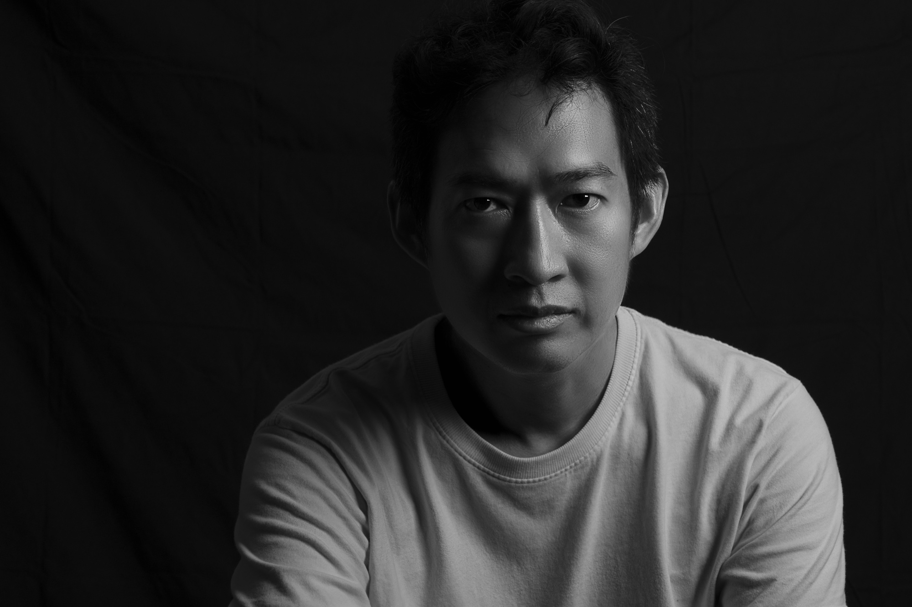

ทำงานอยู่บนเส้นแบ่งบาง ๆ ระหว่างห้วงฝันและความจริง ผสมสีน้ำ หมึก และจังหวะแบบดนตรีเข้าด้วยกัน จนภูมิทัศน์กลายเป็นห้วงความฝัน และความฝันกลายเป็นที่ที่เรากล้าเผชิญสิ่งที่ตื่นอยู่เรากลับไม่ยอมรับ
Working along the thin line between dream and reality — blending watercolour, ink and a musical sense of rhythm until landscapes turn into reveries, and dreams become the place where we dare to face what, awake, we refuse to admit.